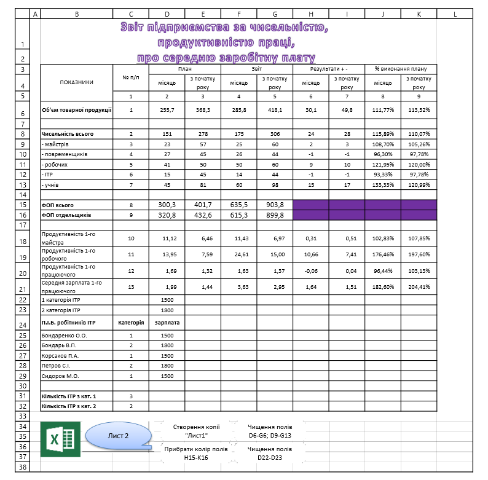
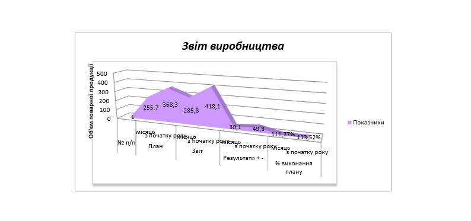

Практична робота №7
Тема: Табличний процесор Microsoft Excel для Windows. Організація таблиць. Використання формул.
Створення діаграм.
Мета роботи: навчитися організовувати таблиці, використовувати формули, створювати діаграми.
Хід роботи:
- Завантажити Microsoft Excel.
- Створити файл «Практична робота №7».
- Ввести інформацію та розрахувати середню заробітну плату та продуктивність праці.
Завдання
- Створити таблицю, заповнити таблицю даними.
- Залити кольором на свій смак комірки: D6 ÷ F6; D9 ÷ F13; D16 ÷ F17.
- Використовуючи логічну функцію СУММ обчислити суми у комірках D8, E8, F8 і G8 для рядків 9 ÷ 13.
- Прописати формули Hi=Fi-Di, Ii=Gi-Ei, Ji=Fi/Di, Ki=Gi/Ei, де і = номерам рядків:
6, 8 ÷ 13, 18 ÷ 21. Наприклад: H6=F6-D6; I6=G6-E6; J6=F6/D6; K6=G6/E6
- Прописати формули:
D18=D6/D9; E18=E6/E9; F18=F6/F9; G18=G6/G9;
D19=D16/D9; E19=E16/E9; F19=F16/F9; G19=G16/G9;
D20=D6/D8; E20=E6/E8; F20=F6/F8; G20=G6/G8;
D21=D16/D8; E21=E15/E8; F21=F15/F8; G21=G15/G8;
- Створити гіперсилку графічному об'єкту:
- з "Лист1" на "Лист2"
- з "Лист1" на практичну роботу на свій смак.
- До комірок J6, J8 застосувати функцію округлення ОКРУГЛ до цілих.
- Створити об’ємну з областями діаграму до «Об’єму товарної продукції», включаючи
показники D6 ÷ J6:
- розмалювати область діаграми на свій смак;
- підписати значення кожній долі діаграми;
- підписати імена категорій, використовуючи комірки D3 ÷ J4;
- зробити заголовок до діаграми – «Звіт підприємства»;
- перенести діаграму на Лист2, дати назву Листу2 – «Діаграма».
- Вставити примітки (контекстне меню) до комірок:
- D26 – 1 – план виконано; 0 - план не виконано;
- J26 – ставка не змінюється.
- Обчислити Премію у комірках Е27 ÷ Е43, використовуючи функцію ЕСЛИ, спираючись на Ставку.
- Використовуючи функцію ГОД підрахувати стаж робітників ІТР (комірки G27 ÷ G43), спираючись на дату
народження та поточну дату.
- Використовуючи функцію ГОД підрахувати число років стажу робітників ІТР (комірки I27 ÷ I43),
спираючись на дату вступу на роботу та поточну дату.
- Використовуючи функцію СЧЁТЕСЛИ підрахувати в:
- D44 – кількість робітників ІТР, що виконали план;
- D45 – кількість робітників ІТР, що не виконали план.
- Створити:
- макрос (Вид→Макросы→Запись макроса) по створенню копії Лист1 на Лист2;
- створити кнопку (Разработчик→Вставить→Кнопка), назначити кнопці створений макрос;
- дати назву кнопці «Створення копії Лист1».
- Створити:
- макрос по чищенню комірок D6 ÷ F6; D9 ÷ F13; D16 ÷ F17;
- створити кнопку, назначити кнопці створений макрос;
- дати назву кнопці «Чищення полів з початковими даними».
- Створити:
- макрос по зміні кольору комірок D6 ÷ F6; D9 ÷ F13; D16 ÷ F17;
- створити кнопку, назначити кнопці створений макрос;
- дати назву кнопці «Змінити колір з початковими даними».
- Зберегти файл, дати назву файлу «Звіт підприємства».

